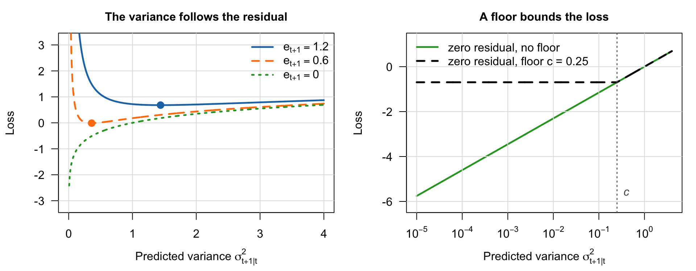
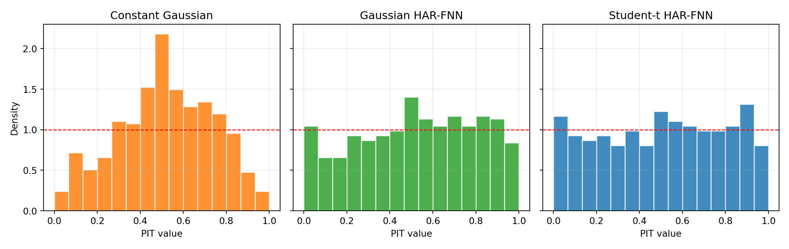
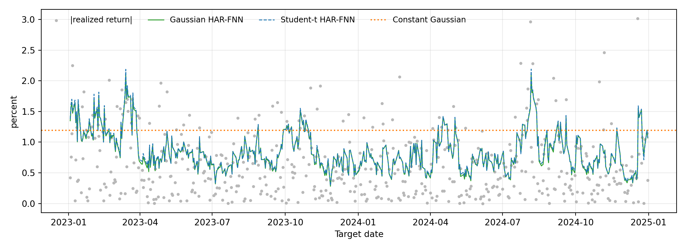

Under active development. A stable version is expected in November 2026. Feedback is welcome by email or via GitHub issues.
9 Distributional Neural Networks
9.1 Overview
In many economic and financial applications, the signal-to-noise ratio is low, and decisions depend on the entire predictive distribution (also called a distribution forecast), not just a single point estimate. A central bank may care about downside inflation risk, a financial economist may care about the left tail of stock market returns, and an actuarial manager at an insurance company may care about multiple risk factors at once. A neural network (NN) trained with mean squared error (MSE) can be useful for estimating a conditional mean, \mathbb{E}[Y \mid \mathbf{X}=\mathbf{x}], but it does not by itself provide a predictive distribution.
Distributional neural networks address this by reframing the prediction problem. Instead of predicting a single number, the network predicts the parameters of a full conditional distribution. This connects the neural-network chapters back to the earlier chapters on information theory and evaluating predictive distributions: likelihood-based training corresponds to the log score, and alternative proper scoring rules such as the continuous ranked probability score (CRPS) can also be used when we want different sensitivity to tails or outliers. Networks of this kind are also used at industrial scale: DeepAR, developed at Amazon Research to forecast product demand, is a recurrent network whose outputs are the parameters of a predictive distribution (Salinas et al. 2020); we return to it in Section 9.3.
The same construction is reported well outside economics. Nearing et al. (2024) forecast daily streamflow with an encoder–decoder of LSTM networks whose output at each lead time is the parameter vector of an asymmetric Laplacian distribution, estimated by minimizing the joint negative log-likelihood of that heteroscedastic density; they report reliability for extreme riverine events in ungauged watersheds at up to five days of lead time, and the resulting system issues seven-day flood forecasts in over 80 countries; the MetNet-3 weather model reports a probability distribution for each output variable and location and is evaluated by CRPS (Merchant and Kalchbrenner 2023); and DoorDash reports predicting a Weibull distribution of arrival times rather than a single estimated time, so that the promised arrival is a quantile of the predictive distribution rather than its mean (DoorDash Engineering 2024). The last two are engineering write-ups rather than refereed studies, and are cited here as evidence of practice. The broader literature on probabilistic forecasting and its evaluation is reviewed in Gneiting and Katzfuss (2014).
9.2 Roadmap
- We first contrast point-prediction networks with distributional networks.
- We then connect negative log-likelihood training to cross-entropy, Kullback–Leibler (KL) divergence, and proper scoring rules.
- Next, we study Gaussian distributional networks and the instability that arises when mean and variance are trained jointly.
- We use Hemisphere Neural Networks (HNNs)—networks with a shared representation and separate mean and variance branches—as a case study for stabilizing distributional estimation in macro-financial settings.
- We then turn to Mixture Density Networks (MDNs), which output the weights and component parameters of a mixture distribution, for richer conditional distributions.
- We close with an empirical application—predictive distributions for next-day returns on the S&P 500 exchange-traded fund, comparing Gaussian and Student-t distributional networks with a constant Gaussian benchmark by proper scoring rules and calibration histograms on a held-out test period.
9.3 From Point Forecasts to Predictive Distributions
As discussed in the Feed-Forward Neural Networks chapter, a standard neural network trained with mean squared error produces a point forecast \hat{y} = f(\mathbf{x};\boldsymbol{\theta}): one number for each feature vector \mathbf{x}. A distributional network instead returns a full conditional density for the outcome. It combines two ingredients: a parametric family of densities, which the modeler chooses before training, and a network that maps the features into the parameters of that family.
Definition: Distributional Neural Network
Let \{p(\cdot\,;\boldsymbol{\eta}) : \boldsymbol{\eta}\in H\} be a parametric family of probability densities for the outcome, where H is the set of admissible parameter vectors. A distributional neural network is a neural network \boldsymbol{\eta}(\cdot\,;\boldsymbol{\theta}) that maps each feature vector \mathbf{x} to a parameter vector \boldsymbol{\eta}(\mathbf{x};\boldsymbol{\theta})\in H, where, as in the Feed-Forward Neural Networks chapter, \boldsymbol{\theta} collects all trainable weights and biases of the network. Its predictive density for Y given \mathbf{X}=\mathbf{x} is the member of the family that the network output selects:
p_{\boldsymbol{\theta}}(y \mid \mathbf{x}) := p\big(y;\boldsymbol{\eta}(\mathbf{x};\boldsymbol{\theta})\big).
For the Gaussian family, \boldsymbol{\eta}=(\mu,\sigma^2), H=\mathbb{R}\times(0,\infty), and p(y;\boldsymbol{\eta})=(2\pi\sigma^2)^{-1/2}\exp\{-(y-\mu)^2/(2\sigma^2)\}. The network output is then \boldsymbol{\eta}(\mathbf{x};\boldsymbol{\theta})=(\mu(\mathbf{x};\boldsymbol{\theta}),\sigma^2(\mathbf{x};\boldsymbol{\theta})), and the predictive density is the Gaussian density with mean \mu(\mathbf{x};\boldsymbol{\theta}) and variance \sigma^2(\mathbf{x};\boldsymbol{\theta}). As an extension, a Student-t family with location and scale parameters adds a degrees-of-freedom parameter as a third component of \boldsymbol{\eta}.
Two levels of parameters must be kept apart. The vector \boldsymbol{\eta} contains the parameters of the density, here \mu and \sigma^2; the vector \boldsymbol{\theta} contains the network weights. Only \boldsymbol{\theta} is estimated, and \mu and \sigma^2 are not elements of \boldsymbol{\theta} but functions of it, which is why we write \mu(\mathbf{x};\boldsymbol{\theta}) in the same way as the network output f(\mathbf{x};\boldsymbol{\theta}) of the Feed-Forward Neural Networks chapter. A generalized autoregressive conditional heteroskedasticity (GARCH) model has the same two levels: in a GARCH(1,1) model the estimated vector is (\omega,\alpha,\beta), and the conditional variance \sigma_t^2 is not one of its elements but a function of it and of past data. The features affect the predictive density only through \boldsymbol{\eta}(\mathbf{x};\boldsymbol{\theta}): the network does not change the shape of the family, only which of its members is used at \mathbf{x}.
In terms of architecture, the single scalar output of a point-forecast network is replaced by one output unit per component of \boldsymbol{\eta}; we call each such unit an output head. The requirement \boldsymbol{\eta}(\mathbf{x};\boldsymbol{\theta})\in H is imposed by the heads themselves: a head for \mu can be linear, whereas a head for \sigma^2 passes its raw output through a strictly positive transformation, as made explicit in Section 9.5. With time-indexed data we later abbreviate the two Gaussian heads evaluated at \mathbf{x}_t as \mu_{t+1\mid t} and \sigma_{t+1\mid t}^2.
The model is typically trained by maximizing the log-likelihood of the data, which is equivalent to minimizing the negative log-likelihood (NLL) loss:
L(\boldsymbol{\theta}) = -\frac{1}{N}\sum_{i=1}^N \log p_{\boldsymbol{\theta}}(y_i \mid \mathbf{x}_i) = -\frac{1}{N}\sum_{i=1}^N \log p\big(y_i;\boldsymbol{\eta}(\mathbf{x}_i;\boldsymbol{\theta})\big).
Here, y_i is the observed outcome and \mathbf{x}_i the feature vector of observation i. We write the objective as a sample average, matching the loss convention of the network chapters; the 1/N does not affect the minimizer.
The same construction at industrial scale. DeepAR, developed at Amazon Research by Salinas et al. (2020) to forecast the demand for very large numbers of products, is a distributional network in the sense of the definition above. One long short-term memory (LSTM) network, as studied in the LSTM chapter, is trained jointly on the sales histories of all products. At each date its inputs are covariates and the previous value of the series, and its output heads deliver the parameters of a family chosen to match the data: the mean and standard deviation of a Gaussian density fors real-valued series, or the mean and a shape parameter of a negative binomial distribution for counts such as units sold. For a discrete outcome, the probability mass function takes the place of the density in the definition and in L(\boldsymbol{\theta}). Parameters that must be positive pass through a strictly positive transformation, and the weights are estimated by maximizing the log-likelihood.
The same construction outside forecasting. Distributional output heads are not tied to predicting a future outcome. Wei and Jiang (2025) estimate the parameters of a structural econometric model by training a neural network on data simulated from the model itself: each training example pairs a parameter draw with the vector of data moments computed from the data set that this draw generated, and the network learns to map moments back to the parameter value behind them. Adding a second output head for a covariance matrix and training under the Gaussian negative log-likelihood above turns that point estimator into a distributional one.
9.4 Training Scores and Information Theory
Information-theoretic interpretation
This NLL objective is the cross-entropy loss encountered in the likelihood and KL-divergence discussion: maximum likelihood estimation (MLE) minimizes sample cross-entropy. At the population level, expected conditional NLL differs from the expected conditional Kullback–Leibler (KL) divergence from the true conditional distribution to the model by a term that does not depend on the model parameters. Provided the relevant expectations are finite, both criteria therefore have the same population minimizer: the KL projection of the true conditional distribution onto the represented model family. Convergence of the empirical estimator to that target additionally requires identification within the density family, dependence-appropriate control of model complexity, a uniform law of large numbers, and sufficiently accurate optimization which we do not discuss here.
The score and the model family play different roles. A realized logarithmic score (LogS) is local: it evaluates only the density assigned to the outcome that occurred. Its expected value is strictly proper and is uniquely minimized by the true density when that density belongs to the admissible class and the expectations are finite. A Gaussian network can adjust only its represented conditional mean and variance functions, so its population target under misspecification is the closest represented Gaussian in KL divergence. Student-t and mixture outputs enlarge the family of distributions to which the expected score can respond.
The same logic can be stated in the language of proper scoring rules. The negative log-likelihood corresponds to LogS: after observing y_i, the model is rewarded for assigning high density to the realized outcome. Minimizing average NLL is therefore the training analogue of minimizing the out-of-sample log score; see the discussion of LogS and CRPS in the Evaluating Predictive Distributions chapter.
Other proper scoring rules can also be used as training losses if they are computable and differentiable for the chosen predictive family. For example, the CRPS compares the full predictive cumulative distribution function (CDF) to the realized outcome. The choice of training score should match the forecasting object: log-likelihood is very sensitive to tail misspecification and extreme observations, while CRPS is less sensitive to these issues.
Question for Reflection
You fit a Gaussian distributional network by maximum likelihood to daily stock returns. The in-sample log-likelihood is high, but the histogram of probability integral transform (PIT) values on a held-out test period, computed as in the predictive-distribution chapter, is U-shaped. What does the U-shape suggest about where the realized returns fall within their predictive distributions? Name two different model failures that would each produce a U-shape, and one additional diagnostic that helps to tell them apart.
Suggested Answer
A U-shaped PIT histogram means that PIT values near 0 and 1 occur too often: realized returns fall in the tails of their predictive distributions more often than those distributions imply. Two model failures would each produce the pattern: a variance head that systematically understates conditional dispersion, and a Gaussian family whose tails are too light. The standardized residuals (y_{t+1} - \hat{\mu}_{t+1\mid t})/\hat{\sigma}_{t+1\mid t} help separate them: a variance well above one supports broad scale underestimation, while a variance near one together with excess tail mass points toward shape misspecification. The Student-t extension and the mixture density networks introduced later in the chapter provide natural robustness checks when the diagnostics point toward shape misspecification.
For dependent data, likelihood-based training does not by itself require an independence assumption. A correctly specified full conditional likelihood can be written as
\sum_{t=1}^{T} \log p_{\boldsymbol{\theta}}(y_t \mid \mathcal{F}_{t-1}),
where \mathcal{F}_{t-1} is the information set available at the forecast origin. Equivalently, in one-step-ahead notation, the chain-rule likelihood is \sum_{t=0}^{T-1}\log p_{\boldsymbol{\theta}}(y_{t+1}\mid\mathcal{F}_t). If the feature vector \mathbf{x}_t is sufficient for the relevant past information, then the true conditional density, written p_0 as in the information-theory chapter, satisfies p_0(y_{t+1}\mid\mathcal{F}_t)=p_0(y_{t+1}\mid\mathbf{x}_t) and the network criterion is the full conditional likelihood. Otherwise, the same sum is better viewed as a conditional log-score, or quasi-likelihood, for the coarser distribution of Y_{t+1} given \mathbf{x}_t. Remaining serial dependence then matters for laws of large numbers, inference, and forecast evaluation even though it need not invalidate the forecasting target.
Link to Predictive-Distribution Evaluation
Training a distributional neural network and evaluating a distributional forecast are two sides of the same problem. During training, a proper scoring rule defines the loss. During evaluation, the same class of scores can be used out of sample to compare predictive distributions.
9.5 A Case Study: Hemisphere Neural Networks (HNN)
A key challenge in distributional modeling is reliably estimating multiple distribution parameters at once. Consider the Gaussian case where we want to learn both the conditional mean and variance:
Y_{t+1}\mid\mathbf{X}_t=\mathbf{x}_t \sim \mathcal{N}\big(\mu_{t+1\mid t}, \sigma_{t+1\mid t}^2\big),
\mu_{t+1\mid t} = \mu(\mathbf{x}_t;\boldsymbol{\theta}),\ \ \sigma_{t+1\mid t}^2 = \sigma^2(\mathbf{x}_t;\boldsymbol{\theta})>0,
where \mu(\cdot\,;\boldsymbol{\theta}) and \sigma^2(\cdot\,;\boldsymbol{\theta}) are the two components of the network output \boldsymbol{\eta}(\cdot\,;\boldsymbol{\theta}) from Section 9.3, Y_{t+1} is the random outcome and \mathbf{X}_t the random predictor vector with realization \mathbf{x}_t, following the book’s case convention. Throughout this chapter, conditioning on \mathbf{x}_t abbreviates conditioning on the event \mathbf{X}_t=\mathbf{x}_t. The two-index subscript follows the book’s forecast convention \hat{y}_{t+1\mid t}: \mu_{t+1\mid t} and \sigma_{t+1\mid t}^2 are formed at origin t, as functions of \mathbf{x}_t, and describe the conditional distribution of Y_{t+1}. The GARCH notation of the recurrent-network chapter indexes a conditional variance by its target date alone, \sigma_t^2=\operatorname{Var}(\varepsilon_t\mid\mathcal{F}_{t-1}); in that notation the same object would be written \sigma_{t+1}^2. The per-time-step negative log-likelihood loss is, up to an additive constant,
\ell_{t+1}(\boldsymbol{\theta})= \frac{1}{2}\log \sigma^2(\mathbf{x}_t;\boldsymbol{\theta}) + \frac{(y_{t+1}-\mu(\mathbf{x}_t;\boldsymbol{\theta}))^2}{2\,\sigma^2(\mathbf{x}_t;\boldsymbol{\theta})},
the form analyzed in Exercise 9.1. Econometricians have met this objective before: it is exactly the Gaussian quasi-likelihood of a GARCH model, with the parametric variance recursion replaced by the network map \sigma^2(\mathbf{x}_t;\boldsymbol{\theta}). The quasi-maximum-likelihood theory of Bollerslev and Wooldridge (1992) also explains why this objective is a sensible target even when the true conditional distribution is not Gaussian: the criterion identifies the conditional mean and the conditional variance as long as those two moments are correctly specified.
Variance collapse. Joint maximum-likelihood training of the two heads has a specific failure mode. Hold the residual e_{t+1}=y_{t+1}-\mu_{t+1\mid t} fixed and view the per-observation loss as a function of the variance alone, \tfrac{1}{2}\log\sigma_{t+1\mid t}^2+e_{t+1}^2/(2\sigma_{t+1\mid t}^2). For e_{t+1}\neq 0, this function is minimized at \sigma_{t+1\mid t}^2=e_{t+1}^2, as Exercise 9.1 derives: the variance head is pulled toward the squared residuals that the mean head leaves behind. The left panel of Figure 9.1 shows the consequence. The smaller the residual, the smaller the loss-minimizing variance and the lower the loss at that minimum; for e_{t+1}=0 the loss reduces to \tfrac{1}{2}\log\sigma_{t+1\mid t}^2, which decreases without bound as the variance approaches zero.
A sufficiently flexible mean head can therefore lower the training loss in a way that has nothing to do with forecasting: by fitting noise in the training outcomes it shrinks its residuals, and the variance head follows them down. In the limiting case in which the mean head interpolates the training sample, every residual is zero and the sample negative log-likelihood has no finite minimizer. We call this failure variance collapse. A positive variance floor as a quick fix, shown in the right panel of Figure 9.1, bounds the loss from below but does not remove the underlying problem. With or without a floor, the variance head sets its predictions close to the squared residuals of the training sample. Those residuals can be misleadingly small if the mean head has absorbed part of the noise in the training outcomes. For a new observation, the expected forecast error (even for correctly specified models) contains the full uncertainty around the data generating process. Hence, it will be larger than the training residuals suggest if the mean head has absorbed part of the noise in the training outcomes. The predicted variances are then too small for new data (because they are derived from the overfitted residuals), and out of sample the predictive distributions are too narrow. This underdispersion is what the U-shaped PIT histogram of the reflection question in Section 9.4 displays.
The opposite substitution is also possible: a variance head can absorb variation that the mean head should have explained, which leaves the predictive distribution too wide where the mean is in fact predictable. Both are forms of distributional overfitting. The two heads compete to explain the same data, and the likelihood alone does not discipline how they share it.
The HNN architecture was introduced by Goulet Coulombe (2025) for a neural Phillips curve. There, separate sub-networks, the hemispheres, process different groups of predictors, and their outputs are combined in a final layer in which they can be read as latent states such as the output gap and inflation expectations. Goulet Coulombe, Frenette, and Klieber (2026) carry the idea over to density forecasting, with one hemisphere for the conditional mean and one for the conditional variance, and add the ingredients that stabilize joint maximum-likelihood training.
HNN architecture for density forecasting. Whereas the hemispheres of the neural Phillips curve are separated from the input layer onward, the density-forecasting version splits the network after a shared common core into two specialized hemispheres. The core is a set of shared layers that learn a common representation of the inputs; because latent drivers can influence both moments through this shared representation, the two heads draw on common predictors—a representation-level link between mean and variance. Genuine autoregressive conditional heteroskedasticity (ARCH)-type dynamics, in which the variance is driven by past innovations, or volatility-in-mean effects, in which the conditional variance enters the mean equation, do not follow from shared layers alone: they arise only if the corresponding variables—lagged residuals, lagged variance, or an explicit cross-head connection—enter the model. The mean hemisphere is a dedicated stack of layers ending in a linear output head that predicts \mu_{t+1\mid t}. The variance hemisphere mirrors it with a softplus output head—the softplus transform \zeta(z)=\log(1+e^{z})>0 (introduced in the Feed-Forward Neural Networks chapter) maps any real pre-activation to a positive value—so that the predicted variance \sigma_{t+1\mid t}^2 is always positive.
The resulting architecture is illustrated in Figure 9.2.

When \mathbf{x}_t contains relevant lagged shocks or variance measures, the network can learn reactive volatility in which variance rises after shocks, as in GARCH-type dynamics. With genuine leading indicators known at the forecast origin, it can instead learn proactive volatility in which predicted variance rises before the realization. The econometric intuition is that some variables may move the conditional mean, some may move conditional uncertainty, and some may affect both.
Stabilizing joint MLE in practice.
The HNN framework introduces three key ingredients to discipline the unstable MLE procedure:
Volatility-emphasis constraint. If Y_{t+1} has a finite second moment, the population law of total variance gives
\operatorname{Var}(Y_{t+1}) = \mathbb{E}\bigl[\operatorname{Var}(Y_{t+1}\mid \mathbf{X}_t)\bigr] + \operatorname{Var}\bigl(\mathbb{E}[Y_{t+1}\mid \mathbf{X}_t]\bigr),
where the outer expectation and variance average over the random predictor vector \mathbf{X}_t. Thus, the expected conditional variance is strictly less than the unconditional variance whenever the conditional mean varies with the predictors. Under stationarity and ergodicity, time averages can estimate these population moments. In finite samples, HNN uses the corresponding empirical relation as a regularization device:
\frac{1}{T}\sum_{t=1}^{T} \sigma^2(\mathbf{x}_t;\boldsymbol{\theta}) \approx \kappa\cdot \operatorname{Var}(Y_{t+1}), \qquad 0 < \kappa < 1.
The multiplier \kappa is calibrated from out-of-bag residuals of a non-distributional baseline—residuals computed for each observation from fits whose training draws exclude it, the device used in the empirical application of the predictive-distribution chapter and treated fully in the random forests chapter. The constraint regularizes the variance hemisphere away from zero and prevents it from absorbing predictable variation that should be explained by the mean hemisphere.
Blocked subsampling (time-aware bagging). Blocked subsampling trains the model repeatedly on different time blocks (“bags”). It adapts bagging—short for bootstrap aggregation—to time-series data; the random forests chapter introduces bagging in full. The predictions \mu_{t+1\mid t} and \sigma_{t+1\mid t}^2 are averaged only across fits for which the observation (\mathbf{x}_t, y_{t+1}) was held out of the training sample. Averaging reduces variation across training samples and network initializations.
Blocked out-of-bag recalibration. After estimation, the fitted variance path is recalibrated against out-of-bag squared forecast errors—errors from fits that did not see the corresponding observations—so that predicted uncertainty is disciplined by prediction errors rather than by in-sample residuals (Goulet Coulombe, Frenette, and Klieber 2026). Mechanically, the log out-of-bag squared errors are regressed on the log fitted variance, so the recalibration adjusts both the level and, through the slope, the amplitude of the variance path, damping its variation when the raw variance head has overfit. This recalibration is distinct from the subsampling in ingredient 2 that generates the out-of-bag predictions.
Together, these three ingredients provide the stabilization: dedicated output heads alone do not prevent joint-likelihood degeneracy.
Beyond Gaussian outputs. The hemisphere approach can be extended to a location-scale Student-t output by adding a third hemisphere for the degrees-of-freedom parameter, \nu. Write Y=\mu+sZ with Z\sim t_\nu. The density is defined for \nu>0, its mean is finite only for \nu>1, and its variance is finite only for \nu>2. Requiring \nu>2, for instance through \nu=2+\zeta(z), guarantees finite variance, but s^2 is not that variance:
\operatorname{Var}(Y)=s^2\frac{\nu}{\nu-2}.
If an existing variance head v(\mathbf{x}_t)—the role played by \sigma^2(\mathbf{x}_t;\boldsymbol{\theta}) above—is meant to retain the interpretation of a conditional variance, the Student-t scale must satisfy s^2(\mathbf{x}_t)=v(\mathbf{x}_t)(\nu-2)/\nu.
Richer families are used in the same way. For German day-ahead electricity prices, Marcjasz et al. (2023) attach a probability layer to a deep network and compare a two-parameter Normal head with a four-parameter Johnson’s SU head, training on the negative log-likelihood and evaluating with the CRPS; the additional skewness and tail parameters are what the flexible head buys.
9.6 Handling Complex Distributions: Mixture Density Networks (MDNs)
For distributions that are skewed, multimodal, or heavier-tailed over empirically relevant ranges than a single Gaussian, one parametric component can be too restrictive. MDNs, proposed by Bishop (1994), address this by modeling the conditional distribution as a mixture of simpler ones, such as Gaussians:
p(y \mid \mathbf{x})=\sum_{k=1}^K \pi_k(\mathbf{x})\,\phi\big(y;\,\mu_k(\mathbf{x}),\,\sigma_k^2(\mathbf{x})\big),
where \phi(y;\mu,v) denotes the Gaussian density with mean \mu and variance v, so that \phi(z;0,1) is the standard normal density \phi(z) of the predictive-distribution chapter.
A finite Gaussian mixture can be substantially more leptokurtic than one Gaussian over the range relevant for an application, but its asymptotic tails remain Gaussian and are dominated by the component with the largest variance. It is therefore not fat-tailed in the strict power-law sense.
The network has three output heads to predict the parameters for all K components:
- Mixing Weights \pi_k(\mathbf{x}): A
softmaxlayer over the K components, \pi_k(\mathbf{x})=\exp(a_k(\mathbf{x}))/\sum_{j=1}^K \exp(a_j(\mathbf{x})). Here, k = 1, \ldots, K indexes the mixture components and K is their number; the transform yields \pi_k>0 and \sum_{k=1}^K\pi_k=1. - Means \mu_k(\mathbf{x}): A linear layer.
- Standard Deviations \sigma_k(\mathbf{x}): A
softpluslayer ensures positivity.
MDNs are particularly useful for modeling phenomena whose predictive distributions are multimodal. Examples include:
- Multimodal inflation distributions (e.g., a low-inflation versus a high-inflation regime).
- Asset returns with regime-switching behavior.
- Labor market dynamics that might feature multiple equilibria.
MDNs are also in large-scale industrial use. Apple’s Siri team reports that, starting with iOS 10, the voice of the assistant Siri is synthesized on the device with deep MDNs that predict the distributions of speech features such as spectrum, pitch, and duration (Siri Team 2017).
MDN training has two transparent difficulties (Bishop 1994). First, component labels are not identified and a subset of components can receive almost all the weight. Second, the likelihood is unbounded if a sufficiently flexible component centers on an observation while its scale approaches zero and its mixing weight does not vanish quickly enough. Careful initialization, penalties on extreme mixing weights, and a positive scale floor are possible safeguards, although the latter two change the criterion or parameter space.
Econometric Interpretation
An MDN is a flexible way to approximate a conditional density with latent regimes. It should not automatically be interpreted as a structural regime-switching model: the mixture components are learned predictive components unless additional economic restrictions are imposed.
Alternative Route: Quantile Output Heads
A different route to flexible distributional output is to train separate network heads with the quantile, or pinball, loss
\rho_\tau(y-q)=(y-q)\bigl(\tau-\mathbf{1}\{y<q\}\bigr), \qquad \tau\in(0,1),
at several quantile levels. The conditional expected loss is minimized by a conditional \tau-quantile q_\tau(\mathbf{x}). Unless the architecture or loss imposes an ordering restriction, the estimated quantiles can cross. A parametric density head avoids crossing because all quantiles come from one cumulative distribution function.
9.7 Empirical Application: Predictive Distributions for SPY Returns
The Overview motivated distributional networks with a financial economist who cares about the left tail of returns. We now construct such a forecast. The realized-variance illustration of the previous chapter produced point forecasts of daily log realized variance for SPY, the S&P 500 exchange-traded fund. Here the same realized-variance information becomes the input to a predictive distribution for the next day’s SPY return. Returns are the classic setting for conditional heteroskedasticity: at a daily horizon their conditional mean is hard to predict, whereas their conditional variance moves with recent volatility, as in GARCH models. A predictive distribution for returns should therefore draw most of its value from a scale that responds to the inputs and, if large moves are more frequent than a Gaussian distribution allows, from its tails.
Target and information set. Let r_{t+1} denote the SPY log return, in percent, from the close of trading day t to the close of trading day t+1, and let R_{t+1} denote the corresponding random variable. The forecast origin is the close of day t. The input vector contains the three log heterogeneous autoregressive (HAR) components of Corsi (2009) used in the previous chapter, all known at that close:
\mathbf{x}_t=\Bigl(\log RV_t,\ \log\bigl(\tfrac{1}{5}\textstyle\sum_{j=0}^{4} RV_{t-j}\bigr),\ \log\bigl(\tfrac{1}{21}\textstyle\sum_{j=0}^{20} RV_{t-j}\bigr)\Bigr)',
where RV_t is the realized variance of day t: the sum of squared 5-minute log returns over regular trading hours, after multiplying returns by 100, so that its units are squared percentage points. The inputs measure price variation up to day t, whereas r_{t+1} refers to day t+1 and also contains the overnight price change from the close of day t to the open of day t+1, which realized variance never covers. The inputs are therefore predictors of the return distribution rather than measurements of its variance: each model must learn how \mathbf{x}_t maps into the location, scale, and tail shape of R_{t+1} given \mathbf{x}_t.1
Sample split. We keep the test years of the previous chapter: the test block contains the 502 return targets dated in 2023 and 2024. All earlier targets form a single estimation sample. Because all hyperparameters are fixed in advance, no validation block is needed. Each model is fitted once on the estimation sample and held fixed throughout the test block; unlike the previous chapter, we do not refit at the start of 2024.
Three predictive distributions. We compare three ways of forming a predictive distribution for R_{t+1} given \mathbf{x}_t: a benchmark that ignores the inputs and two distributional networks.
- The constant Gaussian forecast is \mathcal{N}(\bar r, s_r^2) on every test day, where \bar r and s_r^2 are the estimation-sample mean and the maximum-likelihood variance of the returns (the sum of squared deviations divided by the number of observations). It ignores \mathbf{x}_t.
- The Gaussian HAR-FNN is a feed-forward neural network (FNN) with one hidden layer of 32 softplus units, a linear mean head \mu(\mathbf{x}_t;\boldsymbol{\theta}), and an unconstrained variance pre-activation a(\mathbf{x}_t;\boldsymbol{\theta}). The predictive variance is \sigma^2(\mathbf{x}_t;\boldsymbol{\theta})=c+\zeta(a(\mathbf{x}_t;\boldsymbol{\theta})), where \zeta is the softplus function and c>0 is a small floor.
- The Student-t HAR-FNN adds the third output head for the degrees of freedom proposed in Section 9.5. Its second head now delivers the squared scale, s^2(\mathbf{x}_t;\boldsymbol{\theta})=c+\zeta(a(\mathbf{x}_t;\boldsymbol{\theta})), and its third head a pre-activation b(\mathbf{x}_t;\boldsymbol{\theta}) with \nu(\mathbf{x}_t;\boldsymbol{\theta})=2+\zeta(b(\mathbf{x}_t;\boldsymbol{\theta}))>2. The degrees of freedom may therefore vary with the inputs. As in Section 9.5, the implied conditional variance is s^2(\mathbf{x}_t;\boldsymbol{\theta})\,\nu(\mathbf{x}_t;\boldsymbol{\theta})/(\nu(\mathbf{x}_t;\boldsymbol{\theta})-2), not s^2(\mathbf{x}_t;\boldsymbol{\theta}).
In the notation of Section 9.3, the parameter vector \boldsymbol{\eta}(\mathbf{x}_t;\boldsymbol{\theta}) is (\mu(\mathbf{x}_t;\boldsymbol{\theta}),\sigma^2(\mathbf{x}_t;\boldsymbol{\theta})) for the Gaussian HAR-FNN and (\mu(\mathbf{x}_t;\boldsymbol{\theta}),s^2(\mathbf{x}_t;\boldsymbol{\theta}),\nu(\mathbf{x}_t;\boldsymbol{\theta})) for the Student-t HAR-FNN; the positivity transformations applied to the raw outputs a(\mathbf{x}_t;\boldsymbol{\theta}) and b(\mathbf{x}_t;\boldsymbol{\theta}) are what place these vectors in the admissible set H. In each network the heads share one hidden representation, in the spirit of the HNN common core in Section 9.5, but neither network uses the volatility-emphasis constraint, blocked subsampling, or out-of-bag recalibration; the check that closes this section shows that variance collapse nevertheless plays no role in the results. Each network minimizes its own negative log-likelihood. We evaluate all three forecasts on the test block with LogS, CRPS, and PIT histograms, as in the empirical application of the predictive-distribution chapter.
Show the code
import os
os.environ["KERAS_BACKEND"] = "tensorflow"
os.environ["TF_CPP_MIN_LOG_LEVEL"] = "3"
import random
import numpy as np
import pandas as pd
import keras
import tensorflow as tf
from keras import layers, ops
from scipy import special
from scipy.stats import norm, t as student_t
import properscoring as ps
import matplotlib.pyplot as plt
random.seed(0)
np.random.seed(0)
keras.utils.set_random_seed(0)
spy = (
pd.read_csv("data/taq_spy/SPY_daily_measures.csv", parse_dates=["date"])
.sort_values("date")
.loc[:, ["date", "close_taq", "rv"]]
.reset_index(drop=True)
)
assert spy["date"].is_monotonic_increasing and not spy["date"].duplicated().any()
assert (spy["rv"] > 0).all() and (spy["close_taq"] > 0).all()
window = 22
def make_log_har_returns(rv_arr, close_arr):
"""Row for origin `end`: log-HAR inputs through day `end`, percent log return to close `end + 1`."""
X, r, idx = [], [], []
for end in range(window - 1, len(rv_arr) - 1):
X.append(np.log([
rv_arr[end],
rv_arr[end - 4 : end + 1].mean(),
rv_arr[end - 20 : end + 1].mean(),
]))
r.append(100 * np.log(close_arr[end + 1] / close_arr[end]))
idx.append(end + 1)
return np.asarray(X), np.asarray(r), np.asarray(idx)
X, r, target_idx = make_log_har_returns(spy["rv"].to_numpy(), spy["close_taq"].to_numpy())
dates = spy.loc[target_idx, "date"].reset_index(drop=True) # target dates
in_est = (dates < "2023-01-01").to_numpy()
X_est, r_est = X[in_est], r[in_est]
X_te, r_te = X[~in_est], r[~in_est]
dates_te = dates[~in_est].reset_index(drop=True)
x_center, x_scale = X_est.mean(axis=0), X_est.std(axis=0)
r_center, r_scale = float(r_est.mean()), float(r_est.std()) # r-bar and s_r
Xs_est, Xs_te = (X_est - x_center) / x_scale, (X_te - x_center) / x_scale
print(f"estimation targets: {in_est.sum()} "
f"({dates[in_est].iloc[0].date()} to {dates[in_est].iloc[-1].date()})")estimation targets: 1992 (2015-02-04 to 2022-12-30)Show the code
print(f"test targets: {(~in_est).sum()} ({dates_te.iloc[0].date()} to {dates_te.iloc[-1].date()})")test targets: 502 (2023-01-03 to 2024-12-31)Show the code
print(f"standard deviation of returns: estimation {r_est.std():.2f}, test {r_te.std():.2f}")standard deviation of returns: estimation 1.19, test 0.81The make_log_har_returns helper builds the same three HAR averages as the Chapter 8 illustration and takes their logarithms. Row t of X holds \mathbf{x}_t, and the matching entry of r holds r_{t+1}, so both arrays are indexed by forecast origin while dates records the target date. The inputs are standardized with estimation-sample constants only, so no test-block information enters the scaling. The target needs no standardization, because percent returns already have a mean close to zero and a standard deviation of order one. The printed standard deviations already hint at a problem for the constant Gaussian benchmark: returns in the 2023–2024 test block were considerably less volatile than in the estimation sample, which contains the turbulent years 2020 and 2022.
The constant Gaussian benchmark needs no neural network: it reuses the scaling constants \bar r and s_r on every test day.
Show the code
mu_const_te = np.full_like(r_te, r_center)
sigma_const_te = np.full_like(r_te, r_scale)The two distributional networks share one architecture and differ only in the number of output heads and in the negative log-likelihood they minimize. The Gaussian loss is the per-observation NLL of Section 9.5, with the smooth variance floor that prevents a degenerate density when residuals are near zero (the pathology analyzed in Exercise 9.1); in this application the floor never becomes active, as the closing check shows. Exercise 9.1 derives the optimum under a hard inequality constraint; the implementation uses a smooth map because applying a hard maximum to a network output would give a zero derivative whenever the floor binds. The Student-t loss is the negative logarithm of the location-scale Student-t density,
-\log\Gamma\Bigl(\frac{\nu+1}{2}\Bigr)+\log\Gamma\Bigl(\frac{\nu}{2}\Bigr)+\frac{1}{2}\log(\nu\pi s^2)+\frac{\nu+1}{2}\log\Bigl(1+\frac{(r-\mu)^2}{\nu s^2}\Bigr),
evaluated at the network outputs (\mu,s^2,\nu) for each observation.
We fix all hyperparameters a priori—32 hidden units, learning rate 10^{-3}, 200 epochs, and batch size 32—without a data-driven tuning step. The results below describe one fixed configuration and a single training run per network with a fixed random seed, not a stable architecture ranking; repeated seeds or resamples would be needed to quantify optimization variability.
Show the code
VAR_FLOOR = 1e-3
def gaussian_nll(y_true, y_pred):
mu = y_pred[..., 0:1]
var = VAR_FLOOR + ops.softplus(y_pred[..., 1:2])
return 0.5 * (ops.log(2.0 * np.pi * var) + ops.square(y_true - mu) / var)
def student_t_nll(y_true, y_pred):
mu = y_pred[..., 0:1]
scale2 = VAR_FLOOR + ops.softplus(y_pred[..., 1:2])
nu = 2.0 + ops.softplus(y_pred[..., 2:3])
log_density = (
tf.math.lgamma((nu + 1.0) / 2.0) - tf.math.lgamma(nu / 2.0)
- 0.5 * ops.log(nu * np.pi * scale2)
- 0.5 * (nu + 1.0) * ops.log1p(ops.square(y_true - mu) / (nu * scale2))
)
return -log_density
def make_dist_har_fnn(n_heads, loss, n_neurons=32, learning_rate=1e-3):
inputs = keras.Input(shape=(3,))
h = layers.Dense(n_neurons, activation="softplus")(inputs)
heads = [layers.Dense(1)(h) for _ in range(n_heads)]
model = keras.Model(inputs, layers.Concatenate()(heads))
model.compile(loss=loss, optimizer=keras.optimizers.Adam(learning_rate))
return model
def softplus(a):
return np.logaddexp(0.0, a)
def fit_har_fnns():
"""Train both networks; return their raw head outputs on the estimation sample and the test block."""
outputs = {}
for name, n_heads, loss in [("gauss", 2, gaussian_nll), ("t", 3, student_t_nll)]:
model = make_dist_har_fnn(n_heads=n_heads, loss=loss)
_ = model.fit(Xs_est, r_est.reshape(-1, 1), epochs=200, batch_size=32, verbose=0, shuffle=False)
outputs[f"{name}_est"] = model.predict(Xs_est, verbose=0)
outputs[f"{name}_te"] = model.predict(Xs_te, verbose=0)
outputs[f"{name}_parameters"] = np.array(model.count_params())
return outputs
# cached_arrays(tag, f) returns f() and stores the arrays on disk, so that re-rendering this chapter
# skips the training. Outside the book, call fit_har_fnns() directly.
fits = cached_arrays("har_fnns", fit_har_fnns)
mu_gauss_te = fits["gauss_te"][:, 0]
sigma_gauss_te = np.sqrt(VAR_FLOOR + softplus(fits["gauss_te"][:, 1]))
mu_t_te = fits["t_te"][:, 0]
s_t_te = np.sqrt(VAR_FLOOR + softplus(fits["t_te"][:, 1]))
nu_t_te = 2.0 + softplus(fits["t_te"][:, 2])Because the networks are trained directly on percent returns, their outputs need no back-transformation: \mu(\mathbf{x}_t;\boldsymbol{\theta}), \sigma^2(\mathbf{x}_t;\boldsymbol{\theta}), and s^2(\mathbf{x}_t;\boldsymbol{\theta}) are already on the percent scale, and the variance floor c=10^{-3} corresponds to a standard deviation of only about 0.03 percent. A nonlinear transformation of the target would require more than rescaling. Had we modeled \log RV_{t+1} as in the previous chapter, a Gaussian predictive density with mean m and variance v on the log scale would imply a lognormal density for RV_{t+1}, whose mean is \exp(m+v/2) rather than \exp(m); the density itself changes according to the change-of-variables formula. Scores are therefore comparable only when all forecasts and outcomes are expressed on one common scale, here the percent return. Under the LogS and CRPS, multiplying forecasts and outcomes by the same positive factor preserves model rankings (Kleen 2024), and shifting both by a common constant leaves the scores unchanged; rescaling does, however, change absolute score levels.
Scoring the Student-t forecasts needs one more ingredient. The Gaussian CRPS is available in properscoring, whereas the Student-t CRPS uses the closed form for \nu>1 reported by Jordan, Krüger, and Lerch (2019). Table 9.1 lists each forecast’s average LogS and CRPS over the 502 test days, together with its largest single-day LogS, the date of that day, and its CRPS on that day.
Show the code
def crps_student_t(r, mu, s, nu):
"""Closed-form CRPS of a location-scale Student-t forecast, valid for nu > 1."""
z = (r - mu) / s
const = 2 * np.sqrt(nu) * special.beta(0.5, nu - 0.5) / ((nu - 1) * special.beta(0.5, nu / 2) ** 2)
return s * (z * (2 * student_t.cdf(z, nu) - 1)
+ 2 * student_t.pdf(z, nu) * (nu + z**2) / (nu - 1) - const)
forecasts = {
"Constant Gaussian": ("gaussian", mu_const_te, sigma_const_te, None),
"Gaussian HAR-FNN": ("gaussian", mu_gauss_te, sigma_gauss_te, None),
"Student-t HAR-FNN": ("student_t", mu_t_te, s_t_te, nu_t_te),
}
rows, pit = [], {}
for name, (family, mu, s, nu) in forecasts.items():
if family == "gaussian":
logs = -norm.logpdf(r_te, mu, s)
crps = ps.crps_gaussian(r_te, mu=mu, sig=s)
pit[name] = norm.cdf(r_te, mu, s)
else:
logs = -(student_t.logpdf((r_te - mu) / s, nu) - np.log(s))
crps = crps_student_t(r_te, mu, s, nu)
pit[name] = student_t.cdf((r_te - mu) / s, nu)
worst = int(np.argmax(logs))
rows.append({
"model": name,
"mean_LogS": logs.mean(),
"mean_CRPS": crps.mean(),
"largest_LogS": logs[worst],
"largest_LogS_date": dates_te[worst].date(),
"CRPS_that_day": crps[worst],
})
scores = pd.DataFrame(rows).set_index("model")
(
scores.rename_axis(None)
.rename(columns={
"mean_LogS": "Average LogS", "mean_CRPS": "Average CRPS", "largest_LogS": "Largest LogS",
"largest_LogS_date": "Date of largest LogS", "CRPS_that_day": "CRPS on that day",
})
.style.format({"Average LogS": "{:.3f}", "Average CRPS": "{:.3f}", "Largest LogS": "{:.2f}",
"CRPS on that day": "{:.2f}"})
)| Average LogS | Average CRPS | Largest LogS | Date of largest LogS | CRPS on that day | |
|---|---|---|---|---|---|
| Constant Gaussian | 1.325 | 0.474 | 4.36 | 2024-12-18 | 2.38 |
| Gaussian HAR-FNN | 1.210 | 0.446 | 21.45 | 2024-12-18 | 2.82 |
| Student-t HAR-FNN | 1.169 | 0.442 | 8.52 | 2024-12-18 | 2.86 |
Table 9.2 summarizes the remaining outputs of the two networks over the test block: the range of the predictive standard deviations, where the Student-t standard deviation is the scale multiplied by \sqrt{\nu/(\nu-2)}; the share of test days on which the standard deviation lies below the constant standard deviation s_r; and the ranges of the predicted means and of the degrees of freedom.
Show the code
sd_t_te = s_t_te * np.sqrt(nu_t_te / (nu_t_te - 2))
summary = pd.DataFrame({
name: {
"sd_min": sd.min(),
"sd_max": sd.max(),
"share_sd_below_s_r": np.mean(sd < r_scale),
"mean_min": mu.min(),
"mean_max": mu.max(),
"nu_min": np.nan if nu is None else nu.min(),
"nu_max": np.nan if nu is None else nu.max(),
}
for name, sd, mu, nu in [
("Gaussian HAR-FNN", sigma_gauss_te, mu_gauss_te, None),
("Student-t HAR-FNN", sd_t_te, mu_t_te, nu_t_te),
]
}).T
(
summary.rename(columns={
"sd_min": "Smallest SD", "sd_max": "Largest SD", "share_sd_below_s_r": "Share of days below constant SD",
"mean_min": "Smallest mean", "mean_max": "Largest mean",
"nu_min": "Smallest d.o.f.", "nu_max": "Largest d.o.f.",
})
.style.format("{:.2f}", na_rep="")
)| Smallest SD | Largest SD | Share of days below constant SD | Smallest mean | Largest mean | Smallest d.o.f. | Largest d.o.f. | |
|---|---|---|---|---|---|---|---|
| Gaussian HAR-FNN | 0.28 | 2.11 | 0.86 | -0.13 | 0.08 | ||
| Student-t HAR-FNN | 0.29 | 2.19 | 0.86 | -0.09 | 0.15 | 5.97 | 7.74 |
Table 9.3 prepares a check on variance collapse that closes this section. It compares the Gaussian HAR-FNN with a deliberately oversized Gaussian network: two hidden layers of 256 rectified linear unit (ReLU) neurons, trained for 1000 epochs with otherwise identical settings. For the estimation sample and the test block, the table reports the share of return variance fitted by the mean head, 1-\overline{e^2}/\widehat{\operatorname{Var}}(r), where \overline{e^2} is the average squared residual; the average LogS; the variance of the standardized residuals (r_{t+1}-\mu_{t+1\mid t})/\sigma_{t+1\mid t}; the smallest predictive standard deviation; and the share of PIT values below 0.05 or above 0.95, which is 0.10 for a calibrated forecast.
Show the code
def gaussian_diagnostics(pred, y, parameters):
mu, sd = pred[:, 0], np.sqrt(VAR_FLOOR + softplus(pred[:, 1]))
z = (y - mu) / sd
pit_values = norm.cdf(z)
return {
"parameters": int(parameters),
"mean_head_R2": 1 - np.mean((y - mu) ** 2) / np.var(y),
"mean_LogS": np.mean(-norm.logpdf(y, mu, sd)),
"var_std_resid": np.var(z),
"sd_min": sd.min(),
"share_PIT_outer_10pct": np.mean((pit_values < 0.05) | (pit_values > 0.95)),
}
def fit_large_network():
keras.utils.set_random_seed(0)
inputs = keras.Input(shape=(3,))
h = layers.Dense(256, activation="relu")(inputs)
h = layers.Dense(256, activation="relu")(h)
model = keras.Model(inputs, layers.Concatenate()([layers.Dense(1)(h) for _ in range(2)]))
model.compile(loss=gaussian_nll, optimizer=keras.optimizers.Adam(1e-3))
_ = model.fit(Xs_est, r_est.reshape(-1, 1), epochs=1000, batch_size=32, verbose=0, shuffle=False)
return {"est": model.predict(Xs_est, verbose=0), "te": model.predict(Xs_te, verbose=0),
"parameters": np.array(model.count_params())}
large = cached_arrays("large_gaussian", fit_large_network) # stored like the two networks above
collapse_check = pd.DataFrame({
(name, sample): gaussian_diagnostics(pred, y, parameters)
for name, pred_est, pred_te, parameters in [
("Gaussian HAR-FNN", fits["gauss_est"], fits["gauss_te"], fits["gauss_parameters"]),
("Large Gaussian network", large["est"], large["te"], large["parameters"]),
]
for sample, pred, y in [("estimation", pred_est, r_est), ("test", pred_te, r_te)]
}).T
collapse_check["parameters"] = collapse_check["parameters"].astype(int)
(
collapse_check.rename(columns={
"parameters": "Parameters", "mean_head_R2": "Variance share fitted by mean head",
"mean_LogS": "Average LogS", "var_std_resid": "Variance of standardized residuals",
"sd_min": "Smallest SD", "share_PIT_outer_10pct": "Share of PIT values in outer tenth",
})
.style.format({"Parameters": "{:,d}", "Variance share fitted by mean head": "{:.3f}", "Average LogS": "{:.3f}",
"Variance of standardized residuals": "{:.2f}", "Smallest SD": "{:.3f}",
"Share of PIT values in outer tenth": "{:.3f}"})
)| Parameters | Variance share fitted by mean head | Average LogS | Variance of standardized residuals | Smallest SD | Share of PIT values in outer tenth | ||
|---|---|---|---|---|---|---|---|
| Gaussian HAR-FNN | estimation | 194 | 0.000 | 1.238 | 1.03 | 0.212 | 0.086 |
| test | 194 | -0.011 | 1.210 | 1.06 | 0.280 | 0.084 | |
| Large Gaussian network | estimation | 67,330 | 0.281 | 0.690 | 1.00 | 0.047 | 0.082 |
| test | 67,330 | -0.461 | 14.237 | 28.69 | 0.032 | 0.450 |
Show the code
# How concentrated is the large network's test-block statistic in a few days?
z2_large = ((r_te - large["te"][:, 0]) / np.sqrt(VAR_FLOOR + softplus(large["te"][:, 1]))) ** 2
print(f"Large Gaussian network, test block: the five largest squared standardized residuals contribute "
f"{np.sort(z2_large)[-5:].sum() / z2_large.sum():.0%} of their sum; their median is {np.median(z2_large):.2f}")Large Gaussian network, test block: the five largest squared standardized residuals contribute 45% of their sum; their median is 2.07Figure 9.3 places the constant Gaussian benchmark and the Student-t HAR-FNN on a common scale. Compare how the width of each shaded band relates to the realized returns over time.
Show the code
lower_t = mu_t_te + s_t_te * student_t.ppf(0.025, nu_t_te)
upper_t = mu_t_te + s_t_te * student_t.ppf(0.975, nu_t_te)
bands = [
("Constant Gaussian", mu_const_te - 1.96 * sigma_const_te, mu_const_te + 1.96 * sigma_const_te, "C1"),
("Student-t HAR-FNN", lower_t, upper_t, "C0"),
]
for label, lower, upper, _ in bands:
n_outside = int(np.sum((r_te < lower) | (r_te > upper)))
print(f"{label}: {n_outside} of {len(r_te)} realized returns outside the central 95% interval")Constant Gaussian: 3 of 502 realized returns outside the central 95% interval
Student-t HAR-FNN: 26 of 502 realized returns outside the central 95% intervalShow the code
fig, axes = plt.subplots(2, 1, figsize=(11, 6.4), sharex=True, sharey=True)
for ax, (label, lower, upper, color) in zip(axes, bands):
_ = ax.plot(dates_te, r_te, color="0.55", linewidth=0.8, label="realized return")
_ = ax.fill_between(dates_te, lower, upper, color=color, alpha=0.25, label="central 95% interval")
_ = ax.set(title=label, ylabel="return (%)")
_ = ax.legend(frameon=False, loc="lower left", ncol=2, fontsize=9)
ax.grid(True, alpha=0.25)
_ = axes[1].set_xlabel("Target date")
plt.tight_layout()
plt.show()
The constant Gaussian band is a pair of parallel lines at roughly \pm 2.3 percent: a single estimation-sample variance is replayed at every test date. That variance reflects an estimation sample containing the turbulent years 2020 and 2022, so during the calmer test block the band is too wide on most days. Only 3 of the 502 realized returns fall outside it, whereas a calibrated central 95% interval would miss about 5 percent of outcomes on average. The Student-t HAR-FNN band instead narrows in quiet stretches and widens after volatile days, most visibly in mid-March 2023 and in early August 2024; it is also wide in the first days of 2023, when the weekly and monthly components still reflect the volatile end of 2022. By comparison, 26 of the 502 realized returns (5.2 percent) fall outside this band. Because the inputs are realized variances up to the forecast origin, the band reacts to volatility that has already been observed; it cannot anticipate a large move on a day that follows a calm period.
Table 9.1 quantifies these differences. Both networks improve markedly on the constant Gaussian benchmark: average LogS falls from 1.325 to 1.210 for the Gaussian HAR-FNN and to 1.169 for the Student-t HAR-FNN, and average CRPS from 0.474 to 0.446 and 0.442. Between the two networks, the Student-t output has the clearly lower average LogS, whereas the two average CRPS values differ only in the third decimal. The last three columns show where much of the LogS gap between the networks comes from. On 18 December 2024, SPY fell by about 3 percent after a calm stretch in which the Gaussian network’s predictive standard deviation was about 0.5 percent, so the realized return lay more than six predictive standard deviations below the predictive mean. The fall followed that afternoon’s announcement by the Federal Open Market Committee, which lowered its policy rate as expected but whose projections implied only two quarter-point cuts for 2025, instead of the four projected in September (Federal Open Market Committee 2024). News that arrives on the target day itself cannot be reflected in inputs that end at the previous close. The Gaussian density at that outcome is so small that this single day has a LogS of about 21, compared with about 8.5 for the Student-t network. Divided by 502 test days, this one difference accounts for roughly 0.026 of the average LogS gap of 0.040; without that day, the gap shrinks to about 0.015. This sensitivity is the tail behavior of the LogS discussed in Section 9.4: the LogS evaluates only the density at the realized outcome, and the Gaussian LogS grows quadratically in the standardized surprise, whereas the Student-t LogS grows only logarithmically. The CRPS instead compares the predictive CDF with the step CDF of the outcome. For a large surprise it grows roughly linearly in the distance between the outcome and the predictive location and depends mainly on location and spread rather than on tail shape; on 18 December 2024, the two networks therefore receive almost the same CRPS. As in the previous chapter, we do not test these differences formally; a Diebold and Mariano (1995) comparison of the score differentials with heteroskedasticity- and autocorrelation-consistent (HAC) standard errors, as developed in Exercise 4.3 of the predictive-distribution chapter, would be the appropriate formal comparison.
Figure 9.4 turns from average scores to calibration. For each forecast, a flat histogram means that the realized returns fall about equally often into each of the 15 equal-probability intervals of the predictive distributions.
Show the code
colors = {"Constant Gaussian": "C1", "Gaussian HAR-FNN": "C2", "Student-t HAR-FNN": "C0"}
bins = np.linspace(0, 1, 16)
fig, axes = plt.subplots(1, 3, figsize=(12, 3.8), sharey=True)
for ax, (name, pit_values) in zip(axes, pit.items()):
_ = ax.hist(pit_values, bins=bins, density=True, color=colors[name], edgecolor="white", alpha=0.85)
_ = ax.axhline(1.0, color="red", linestyle="--", linewidth=1)
_ = ax.set(title=name, xlabel="PIT value", ylim=(0, 2.3))
ax.grid(True, alpha=0.25)
axes[0].set_ylabel("Density")
plt.tight_layout()
plt.show()
The constant Gaussian histogram is hump-shaped: far too few PIT values fall in the outer bins and too many near the center. Realized returns landed in the tails of this predictive distribution much less often than the forecast implies, which is the calibration counterpart of the overly wide band in Figure 9.3. The two network forecasts show no comparable systematic pattern; their bin heights scatter around the uniform density without a clear hump or U-shape. Because the PIT sample is finite and the PIT sequence may be serially dependent, these histograms are descriptive diagnostics rather than formal calibration tests, and they cannot rank the two networks against each other. That ranking rests on the scores.
The two networks share their inputs, architecture, and training settings, yet the Student-t network attains the lower LogS. Do they differ in the scale of their predictive distributions or only in their tails? Figure 9.5 compares the predictive standard deviations of the two networks, whose ranges appear in Table 9.2.
Show the code
fig, ax = plt.subplots(figsize=(11, 4))
ax.scatter(dates_te, np.abs(r_te), s=6, color="0.72", label="|realized return|")
ax.plot(dates_te, sigma_gauss_te, color=colors["Gaussian HAR-FNN"], linewidth=1.0, label="Gaussian HAR-FNN")
ax.plot(dates_te, sd_t_te, color=colors["Student-t HAR-FNN"], linewidth=1.0, linestyle="--",
label="Student-t HAR-FNN")
ax.axhline(r_scale, color=colors["Constant Gaussian"], linestyle=":", linewidth=1.5, label="Constant Gaussian")
ax.set_xlabel("Target date")
ax.set_ylabel("percent")
ax.legend(frameon=False, loc="upper left", ncol=4, fontsize=9)
ax.grid(True, alpha=0.25)
plt.tight_layout()
plt.show()
The two standard-deviation paths are almost indistinguishable. Both rise sharply in mid-March 2023 and in early August 2024, reach lows of about 0.3 percent on the calmest days, and lie below the constant standard deviation s_r on about 86 percent of test days, consistent with a constant forecast that is too wide for this test block. The two networks therefore agree on the scale of the predictive distribution, and the variance heads have learned to track the volatility information in the realized-variance inputs. The Student-t network’s advantage under the LogS comes from the shape of its distribution: with degrees of freedom between about 6.0 and 7.7 on the test block, its tails assign more density to large surprises such as the return of 18 December 2024. The location heads add little: the predicted means stay within about 0.15 percentage points of zero, small relative to predictive standard deviations between about 0.3 and 2.2 percent. In this application, the gains over the constant benchmark therefore come from a variance head that responds to the realized-variance inputs and, for the LogS, from the heavier-tailed output family.
A check on variance collapse. Neither network uses the HNN stabilizers of Section 9.5, so it is worth verifying that the variance collapse described there plays no role in these results. The first two rows of Table 9.3 show that it does not. The mean head of the Gaussian HAR-FNN fits essentially none of the return variance in the estimation sample, so its residuals are almost the returns themselves and cannot be driven toward zero. Accordingly, the standardized residuals have a variance close to one both in the estimation sample (1.03) and on the test block (1.06), and between 8 and 9 percent of the PIT values fall in the outer tenth of the unit interval in either sample. The smallest predictive standard deviation in the estimation sample, about 0.21 percent, is far above the 0.03 percent implied by the variance floor, which therefore never becomes active. The protection comes from limited capacity relative to the data: 194 parameters, three smooth inputs, and 1,992 estimation days of a target whose mean is nearly unpredictable.
The last two rows show how little it takes to lose that protection. With 67,330 parameters, the mean head fits about 28 percent of the return variance in the estimation sample. Because the small network finds no mean predictability in these inputs, that fit is noise, and the negative value on the test block confirms it: the fitted mean forecasts worse than a constant. Within the estimation sample nothing looks wrong. The variance head matches the shrunken residuals, the standardized residuals have a variance of 1.00, and the average LogS falls to 0.69. On the test block, the standardized residuals have a variance of about 29, a value dominated by a few days on which the network is confidently wrong: as the line printed below Table 9.3 shows, the five largest squared standardized residuals account for almost half of their sum. The average LogS rises to about 14, far above the 1.33 of the constant Gaussian benchmark, and 45 percent of the PIT values fall in the outer tenth of the unit interval, a pronounced U-shape. This is variance collapse in its finite-sample form: the predicted variances are not zero, but they were fitted to training residuals that are much smaller than the errors the network makes on new data. It is the situation that the HNN stabilizers address, and it cannot be detected from the in-sample fit. As before, these numbers come from a single training run with a fixed seed.
Question for Reflection
The Student-t HAR-FNN restricts its degrees of freedom to \nu(\mathbf{x}_t;\boldsymbol{\theta})>2. Suppose the restriction were relaxed to \nu(\mathbf{x}_t;\boldsymbol{\theta})>0. For which values of \nu would each of the following remain finite: (i) the LogS at a realized return, and (ii) the predictive standard deviation plotted in Figure 9.5?
Suggested Answer
- The location-scale Student-t density is positive and finite at every real outcome for any \nu>0, so the LogS at a realized return is finite for all \nu>0. (ii) The variance s^2\nu/(\nu-2) is finite only for \nu>2.
These comparisons rank complete forecasting procedures, each fitted once on one estimation sample, the two networks with a single random seed. The Gaussian and Student-t networks share their architecture, inputs, and training settings and differ only in the output family, so the LogS gap between them speaks to tail shape, with the caveat that more than half of it comes from a single test day. The size of the improvement over the constant benchmark also depends on the test period: the calmer the test block is relative to the estimation sample, the more a constant variance overstates uncertainty. Nor does the comparison show that a neural network is needed to obtain these gains: a parametric model whose variance depends on the same realized-variance inputs would be the natural benchmark for judging the added flexibility of the network. Applying the full HNN stabilization procedure, or adding inputs whose effect on the return distribution may be nonlinear, would be natural next experiments.
The methodological lesson is that the diagnostics answer different questions. The bands and standard-deviation paths show whether the predictive scale responds to the information set. The PIT histograms show whether realized returns fall into the predictive distributions with the right frequencies. The scores combine calibration and concentration near the realized outcomes into one number per forecast. The constant Gaussian forecast fails the first two checks. Among the network forecasts, only the scores separate the Gaussian from the Student-t output family.
9.8 Summary
Key Takeaways
- Distributional networks predict parameters of a conditional distribution rather than only a point forecast.
- Negative log-likelihood minimizes LogS; CRPS provides an alternative when it is differentiable for the chosen model.
- Hemisphere networks stabilize joint learning through a constraint emphasizing volatility, blocked subsampling and blocked out-of-bag recalibration, in addition to separate outputs for location and scale.
- Mixture density networks combine component distributions to represent shapes such as skewness and multiple modes.
Common Pitfalls
- Producing a valid density does not establish calibration, which must be checked on held-out outcomes.
- A low in-sample negative log-likelihood can signal variance collapse, because a mean head that fits noise shrinks the training residuals to which the variance head is fitted.
- Mixture components are not identified economic regimes without additional restrictions.
9.9 Exercises
Exercise 9.1: Variance Collapse in Joint Gaussian NLL Training
Consider a Gaussian distributional model for one-step-ahead forecasting. Maximizing the likelihood is equivalent to minimizing the negative log-likelihood. To keep the algebra light, write e_{t+1}=y_{t+1}-\mu_{t+1\mid t} for the residual and v_{t+1}=\sigma_{t+1\mid t}^2 for the predicted variance. The per-observation Gaussian negative log-likelihood is then, up to an additive constant,
\ell(e_{t+1},v_{t+1})=\frac{1}{2}\log v_{t+1}+\frac{e_{t+1}^2}{2v_{t+1}}, \qquad v_{t+1}>0.
- Treat the residual as fixed and minimize over the predicted variance.
- For e_{t+1} \neq 0, derive the value of v_{t+1} that minimizes \ell(e_{t+1},v_{t+1}) over v_{t+1}>0. Use the sign of the first derivative to verify that it is the global minimizer.
- Show that for e_{t+1}=0 the infimum of \ell(0,v_{t+1}) over v_{t+1}>0 equals -\infty and is not attained. Conclude that if a flexible mean head interpolates the training sample, so that e_{t+1}=0 for all t=1,\dots,T, and the variance head can choose each v_{t+1} freely, then the sample negative log-likelihood \sum_{t=1}^{T}\ell(e_{t+1},v_{t+1}) has no finite minimizer.
- Suppose the model imposes a variance floor v_{t+1}\ge c for a constant c>0. Solve the constrained minimization problem for one observation and show that the optimal variance is v_{t+1}^{\ast}=\max\{e_{t+1}^2,c\}. Explain why the floor removes the pathology of Part 1b, and why the predictive distributions can nevertheless be too narrow out of sample when the mean head has fitted noise in the training outcomes.
- Now suppose the predicted variances share a free common scale: v_{t+1}=\lambda\,\tilde v_{t+1}, where \lambda>0 is a parameter and the numbers \tilde v_{t+1}>0 are given. The residuals are given as well, and not all of them are zero. Minimize the sample negative log-likelihood \sum_{t=1}^{T}\ell(e_{t+1},\lambda\tilde v_{t+1}) over \lambda, and show that at the minimizer the standardized residuals z_{t+1}=e_{t+1}/\sqrt{v_{t+1}} satisfy \frac{1}{T}\sum_{t=1}^{T}z_{t+1}^2=1 . For the deliberately oversized Gaussian network of Section 9.7, whose mean head fits noise, Table 9.3 reports a variance of the standardized residuals of 1.00 in the estimation sample and of about 29 on the test block. The squared average of z_{t+1} is below 0.02 in both samples, so these variances are practically identical to the mean squares \frac{1}{T}\sum_{t=1}^{T} z_{t+1}^2. Which of the two numbers is informative about calibration, and why?
- The volatility-emphasis constraint of Section 9.5 sets the average predicted variance to \kappa times the variance of the outcome. Assume that Y_{t+1} has a finite, positive variance, and define the population R^2 of the conditional mean as R^2=\operatorname{Var}\bigl(\mathbb{E}[Y_{t+1}\mid\mathbf{X}_t]\bigr)/\operatorname{Var}(Y_{t+1}).
- Use the law of total variance to show that \mathbb{E}\bigl[\operatorname{Var}(Y_{t+1}\mid\mathbf{X}_t)\bigr]=(1-R^2)\operatorname{Var}(Y_{t+1}), so that the population counterpart of the multiplier is \kappa=1-R^2.
- A natural estimate of \kappa is the ratio of an average squared residual to the sample variance of the outcome. Which value does this estimate take when the residuals come from a mean that interpolates the training sample, and what would the constraint then enforce?
- Explain why residuals from out-of-bag fits avoid this failure. Then suppose that neighboring observations are dependent in such a way that a flexible mean trained on the dates adjacent to t can partly reproduce the noise in y_{t+1}, for example because the outcome is persistent or because outcomes are built from overlapping windows. Explain why contiguous blocks rather than individual dates should then be held out.
Exam level. Parts 1–2 establish the pathology, Part 3 shows why an in-sample calibration diagnostic cannot detect it, and Part 4 connects the remedy to the law of total variance; Parts 1–2 and Parts 3–4 could be set as two separate exam questions.
Hint for Part 2
First solve the unconstrained problem from Part 1a. Then check whether that solution satisfies the inequality constraint v_{t+1} \ge c, and use the sign of the first derivative from Part 1a if it does not.
Hint for Part 3
Use \log(\lambda\tilde v_{t+1})=\log\lambda+\log\tilde v_{t+1}, so that only two terms of the sample objective depend on \lambda. After solving for \lambda, substitute v_{t+1}=\lambda\tilde v_{t+1} into z_{t+1}^2=e_{t+1}^2/v_{t+1}.
Solution
Part 1: The loss-minimizing variance
Part a. Differentiate with respect to v_{t+1}:
\frac{\partial \ell}{\partial v_{t+1}} = \frac{1}{2v_{t+1}}-\frac{e_{t+1}^2}{2v_{t+1}^2} = \frac{v_{t+1}-e_{t+1}^2}{2v_{t+1}^2}.
The derivative is negative for v_{t+1}<e_{t+1}^2, zero at v_{t+1}=e_{t+1}^2, and positive for v_{t+1}>e_{t+1}^2. The loss therefore decreases up to v_{t+1}=e_{t+1}^2 and increases afterwards, so
v_{t+1}^{\ast}=e_{t+1}^2
is the global minimizer on (0,\infty). The attained loss is \ell(e_{t+1},e_{t+1}^2)=\tfrac{1}{2}\log e_{t+1}^2+\tfrac{1}{2}, which is lower the smaller the residual.
Part b. If e_{t+1}=0, then
\ell(0,v_{t+1})=\frac{1}{2}\log v_{t+1}\to-\infty \qquad\text{as } v_{t+1}\downarrow 0 .
The infimum over v_{t+1}>0 is therefore -\infty. It is not attained, because \tfrac{1}{2}\log v_{t+1} is finite for every v_{t+1}>0.
For the sample statement, if the mean head interpolates the training sample, then e_{t+1}=0 for all t, and the sample objective is
\sum_{t=1}^{T}\ell(0,v_{t+1})=\frac{1}{2}\sum_{t=1}^{T}\log v_{t+1}.
Sending each v_{t+1} toward zero makes this sum arbitrarily negative, so the sample negative log-likelihood has no finite minimizer. This is the limiting case of the variance collapse described in Section 9.5.
Part 2: A variance floor
From Part 1a, the unconstrained minimizer is v_{t+1}=e_{t+1}^2, and the loss is increasing in v_{t+1} to the right of it. Under the constraint v_{t+1}\ge c there are two cases.
- If e_{t+1}^2\ge c, the unconstrained minimizer is feasible, so v_{t+1}^{\ast}=e_{t+1}^2.
- If e_{t+1}^2<c, the loss is increasing on the whole feasible set [c,\infty), so the constrained minimizer is the boundary point v_{t+1}^{\ast}=c.
Together, v_{t+1}^{\ast}=\max\{e_{t+1}^2,c\}. This covers e_{t+1}=0, for which the loss \tfrac{1}{2}\log v_{t+1} is increasing everywhere.
The floor removes the pathology of Part 1b because the per-observation loss is now bounded below by \tfrac{1}{2}\log c, so the sample objective can no longer be driven to -\infty. The floor does not remove the underlying problem. The fitted variance \max\{e_{t+1}^2,c\} is still determined by in-sample residuals. If the mean head has fitted noise in the training outcomes, those residuals are smaller than genuine forecast errors, so the predicted variances are too small for new data and the predictive distributions are too narrow out of sample.
Part 3: In-sample standardized residuals are uninformative
Because \log(\lambda\tilde v_{t+1})=\log\lambda+\log\tilde v_{t+1}, the sample objective, written Q(\lambda), is
Q(\lambda)=\frac{T}{2}\log\lambda+\frac{1}{2}\sum_{t=1}^{T}\log\tilde v_{t+1} +\frac{1}{2\lambda}\sum_{t=1}^{T}\frac{e_{t+1}^2}{\tilde v_{t+1}} .
Write S=\sum_{t=1}^{T}e_{t+1}^2/\tilde v_{t+1}, which is positive because not all residuals are zero. Then
Q'(\lambda)=\frac{T}{2\lambda}-\frac{S}{2\lambda^2}=\frac{T\lambda-S}{2\lambda^2},
which is negative for \lambda<S/T and positive for \lambda>S/T. The global minimizer is
\hat\lambda=\frac{1}{T}\sum_{t=1}^{T}\frac{e_{t+1}^2}{\tilde v_{t+1}} .
With v_{t+1}=\hat\lambda\tilde v_{t+1},
\frac{1}{T}\sum_{t=1}^{T}z_{t+1}^2 =\frac{1}{T}\sum_{t=1}^{T}\frac{e_{t+1}^2}{\hat\lambda\tilde v_{t+1}} =\frac{1}{\hat\lambda}\cdot\frac{S}{T}=1 .
This identity holds for any residuals, including residuals that a noise-fitting mean head has made far too small: the scale \hat\lambda simply shrinks with them. A value of one in the estimation sample is therefore what maximum likelihood produces whenever the variance head can adjust its overall scale, and it carries no information about calibration. The value of 1.00 for the oversized network is approximately of this kind: its variance head, a floor plus a softplus transformation, contains no exactly free scale, but a flexible head can rescale its output almost freely. The value of about 29 on the test block is the informative one. There the residuals are forecast errors that played no role in choosing the scale, and the average of e_{t+1}^2/v_{t+1} is about 29 instead of one. This average is driven by a small number of days on which the network is confidently wrong, so its exact value is fragile; that it lies far above one is not.
As an aside that the question does not ask for: re-estimating the scale from out-of-bag errors, \hat\lambda_{\text{oob}}=\frac{1}{T}\sum_{t=1}^{T}e_{t+1,\text{oob}}^2/\tilde v_{t+1}, is the simplest correction in the spirit of the out-of-bag recalibration of Section 9.5, which also adjusts a slope.
Part 4: The multiplier \kappa
Part a. The law of total variance states
\operatorname{Var}(Y_{t+1}) =\mathbb{E}\!\left[\operatorname{Var}(Y_{t+1}\mid\mathbf{X}_t)\right] +\operatorname{Var}\!\left(\mathbb{E}[Y_{t+1}\mid\mathbf{X}_t]\right).
By the definition of R^2, the last term equals R^2\operatorname{Var}(Y_{t+1}). Rearranging gives
\mathbb{E}\!\left[\operatorname{Var}(Y_{t+1}\mid\mathbf{X}_t)\right]=(1-R^2)\operatorname{Var}(Y_{t+1}).
The constraint equates the average predicted variance, the sample counterpart of the left-hand side, with \kappa\operatorname{Var}(Y_{t+1}), so the population counterpart of the multiplier is \kappa=1-R^2. It is strictly below one whenever the conditional mean varies with the predictors.
Part b. If the mean interpolates the training sample, every residual is zero, so the average squared residual and hence the estimate of \kappa are zero. The constraint would then force the average predicted variance toward zero: instead of preventing variance collapse, it would impose it.
Part c. An out-of-bag residual for the target y_{t+1} comes from fits that were not trained on the observation (\mathbf{x}_t,y_{t+1}). It therefore cannot be shrunk mechanically by fitting the noise in that outcome, and with an interpolating mean the implied estimate of \kappa is no longer zero. An out-of-bag residual is still not a real-time forecast error, because the fits that produce it may use observations dated after t+1. Under the stated dependence, this matters: if only the single date is held out, its neighbors remain in the training sample, and a flexible mean can reproduce part of the noise in y_{t+1} through them. The held-out error is then too small for the same reason as an in-sample residual, only to a lesser degree. Holding out a contiguous block that is long relative to the dependence removes those neighbors from the training sample.
Exercise 9.2: A Moment-Matched Gaussian Forecast versus a Mixture
Consider the symmetric two-component conditional density
f_M(y\mid \mathbf{x}_t) = \frac{1}{2}\,\phi(y;-m_t,s^2)+\frac{1}{2}\,\phi(y;m_t,s^2), \qquad m_t>0,\ s>0,
where \phi(y;\mu,v) denotes the Gaussian density with mean \mu and variance v, as in Section 9.6. Consider also the Gaussian forecast
f_G(y\mid \mathbf{x}_t)=\phi(y;0,m_t^2+s^2).
Throughout, suppose that f_M is the true conditional density of Y_{t+1} given \mathbf{x}_t.
- Derive the conditional mean and the conditional variance of Y_{t+1} under f_M, and verify that f_G matches both moments.
- A Gaussian forecast \phi(y;\mu,v) is evaluated by its expected LogS under the true density, \mathbb{E}\bigl[-\log\phi(Y_{t+1};\mu,v)\mid\mathbf{x}_t\bigr]. Show that this expected LogS equals \frac{1}{2}\log(2\pi v)+\frac{m_t^2+s^2+\mu^2}{2v}, and that it is minimized over \mu\in\mathbb{R} and v>0 at \mu=0 and v=m_t^2+s^2. Conclude that, at this \mathbf{x}_t, f_G is the population target of a Gaussian distributional network with sufficiently flexible heads, in the sense of Section 9.4, and state why the MSE-optimal point forecast is the same under f_M and f_G.
- Evaluate both densities at the outcome y_{t+1}=m_t, the center of one mixture component. Show that, as m_t/s\to\infty with s fixed, f_M(m_t\mid\mathbf{x}_t) converges to a positive constant whereas f_G(m_t\mid\mathbf{x}_t) converges to zero, and that the LogS advantage of f_M at this outcome satisfies \log f_M(m_t\mid\mathbf{x}_t)-\log f_G(m_t\mid\mathbf{x}_t)-\Bigl(\log\frac{m_t}{s}+\frac{1}{2}-\log 2\Bigr)\to 0 . Explain why outcomes near \pm m_t are the typical ones under f_M when m_t/s is large.
- A mixture density network with K components forms its mixing weights from raw outputs a_1,\dots,a_K through \pi_k=\exp(a_k)/\sum_{j=1}^{K}\exp(a_j).
- Show that adding the same constant to all raw outputs leaves every \pi_k unchanged, and state one restriction on the raw outputs that removes this indeterminacy.
- Show that relabeling the components, that is, applying the same permutation to the triples (\pi_k,\mu_k,\sigma_k^2), leaves the mixture density unchanged. How many labelings describe the same density when all triples are distinct?
- Explain why neither indeterminacy affects the predictive density or its LogS. Then state what the indeterminacy of Part a implies for interpreting the level of a single raw output a_k, and why the indeterminacy of Part b matters as soon as a component is interpreted as an economic regime.
Exam level. The exercise shows that matching the mean and the variance does not match the predictive distribution, that a Gaussian network has exactly this moment-matched forecast as its population target, that only a distributional score detects the difference, and what a mixture likelihood leaves unidentified.
Hint for Part 2
Write -\log\phi(y;\mu,v)=\tfrac{1}{2}\log(2\pi v)+(y-\mu)^2/(2v) and use \mathbb{E}[(Y_{t+1}-\mu)^2\mid\mathbf{x}_t]=\operatorname{Var}(Y_{t+1}\mid\mathbf{x}_t)+(\mathbb{E}[Y_{t+1}\mid\mathbf{x}_t]-\mu)^2. Minimize over \mu first; the remaining problem in v has the form solved in Exercise 9.1, Part 1a.
Hint for Part 3
The mixture component centered at -m_t lies at distance 2m_t from the outcome. For the Gaussian forecast, write \tfrac{1}{2}\log(m_t^2+s^2)=\log m_t+\tfrac{1}{2}\log(1+s^2/m_t^2).
Solution
Part 1: Moments of the mixture
By symmetry,
\mathbb{E}[Y_{t+1}\mid \mathbf{x}_t] = \frac{1}{2}(-m_t)+\frac{1}{2}(m_t)=0.
Each component has second moment m_t^2+s^2, so
\mathbb{E}[Y_{t+1}^2\mid \mathbf{x}_t] = \frac{1}{2}(m_t^2+s^2)+\frac{1}{2}(m_t^2+s^2) = m_t^2+s^2,
and
\operatorname{Var}(Y_{t+1}\mid \mathbf{x}_t) = \mathbb{E}[Y_{t+1}^2\mid \mathbf{x}_t] - \big(\mathbb{E}[Y_{t+1}\mid \mathbf{x}_t]\big)^2 = m_t^2+s^2.
The Gaussian forecast f_G has mean 0 and variance m_t^2+s^2, so it matches both moments.
Part 2: The moment-matched Gaussian is the KL projection
Since -\log\phi(y;\mu,v)=\tfrac{1}{2}\log(2\pi v)+(y-\mu)^2/(2v), the expected LogS is
\frac{1}{2}\log(2\pi v)+\frac{\mathbb{E}[(Y_{t+1}-\mu)^2\mid\mathbf{x}_t]}{2v}.
By Part 1, \mathbb{E}[(Y_{t+1}-\mu)^2\mid\mathbf{x}_t]=\operatorname{Var}(Y_{t+1}\mid\mathbf{x}_t)+(0-\mu)^2=m_t^2+s^2+\mu^2, which gives the stated expression.
For every v>0, the expression is increasing in \mu^2, so \mu=0 is optimal. The remaining function of v, \tfrac{1}{2}\log(2\pi v)+(m_t^2+s^2)/(2v), has the form of the loss in Exercise 9.1, Part 1a, with e_{t+1}^2 replaced by m_t^2+s^2 and an additive constant. Its global minimizer is therefore v=m_t^2+s^2.
Hence f_G minimizes the expected LogS among all Gaussian forecasts. The expected LogS of a forecast differs from its KL divergence from the true density only by a term that does not depend on the forecast, so f_G is the KL projection of f_M onto the Gaussian family: the population target of a Gaussian distributional network when the truth is f_M. A Gaussian network does not fail here by estimating the wrong mean or variance. It estimates both correctly and still reports the wrong distribution.
Under squared-error loss the optimal point forecast is the conditional mean, which is zero under both densities. Both also imply the same expected squared error, m_t^2+s^2. An MSE comparison therefore cannot distinguish them.
Part 3: The densities at a typical outcome
For the mixture,
f_M(m_t\mid \mathbf{x}_t) = \frac{1}{2}\frac{1}{\sqrt{2\pi}s}e^{-2m_t^2/s^2} + \frac{1}{2}\frac{1}{\sqrt{2\pi}s} = \frac{1}{2\sqrt{2\pi}s}\Big(1+e^{-2m_t^2/s^2}\Big) \to \frac{1}{2\sqrt{2\pi}s}>0,
because the first component is centered at -m_t, at distance 2m_t from the outcome. For the Gaussian forecast,
f_G(m_t\mid \mathbf{x}_t) = \frac{1}{\sqrt{2\pi(m_t^2+s^2)}}\exp\!\left(-\frac{m_t^2}{2(m_t^2+s^2)}\right)\to 0,
since the exponential factor converges to e^{-1/2} while the first factor behaves like 1/(\sqrt{2\pi}\,m_t).
For the LogS difference, take logarithms:
\log f_M(m_t\mid \mathbf{x}_t)=-\log\bigl(2\sqrt{2\pi}\,s\bigr)+\log\bigl(1+e^{-2m_t^2/s^2}\bigr),
\log f_G(m_t\mid \mathbf{x}_t)=-\log\sqrt{2\pi}-\frac{1}{2}\log(m_t^2+s^2)-\frac{m_t^2}{2(m_t^2+s^2)} .
As m_t/s\to\infty, \log\bigl(1+e^{-2m_t^2/s^2}\bigr)\to 0, \tfrac{1}{2}\log(m_t^2+s^2)-\log m_t\to 0, and m_t^2/(2(m_t^2+s^2))\to\tfrac{1}{2}. The difference of the two logarithms therefore behaves like
-\log 2-\log s+\log m_t+\frac{1}{2}=\log\frac{m_t}{s}+\frac{1}{2}-\log 2 ,
which grows without bound.
Under f_M, the outcome is drawn from one of the two components with probability one half each, and lies within a few multiples of s of -m_t or m_t. When m_t/s is large, outcomes near \pm m_t are therefore the typical ones, and the Gaussian forecast, which places its mode at zero where almost no outcomes occur, assigns them a density of order 1/m_t. The LogS of f_G exceeds that of f_M at such outcomes by roughly \log(m_t/s), so the LogS separates the two forecasts more strongly the further apart the modes are. The MSE cannot separate them at all, by Part 2.
Part 4: What the mixture likelihood does not identify
Part a. For any constant c,
\frac{\exp(a_k+c)}{\sum_{j=1}^{K}\exp(a_j+c)} =\frac{e^{c}\exp(a_k)}{e^{c}\sum_{j=1}^{K}\exp(a_j)}=\pi_k .
The raw outputs are therefore not determined by the weights. Conversely, the weights determine all differences, since a_k-a_K=\log(\pi_k/\pi_K), so a common shift is the only indeterminacy. Fixing one raw output, for example a_K=0, removes it; this normalization is familiar from the base category of discrete-choice models such as the multinomial logit.
Part b. The mixture density \sum_{k=1}^{K}\pi_k\,\phi(y;\mu_k,\sigma_k^2) is a sum over components. A permutation of the triples only reorders the terms of this sum and leaves its value unchanged. With distinct triples there are K! labelings of the same density.
Part c. The predictive density, and therefore the LogS and every other score, depends on the raw outputs only through the weights \pi_k and on the components only through the unordered collection of triples. Both indeterminacies leave these objects unchanged, so they are harmless for forecasting. They matter for interpretation. By Part a, the level of a single raw output a_k carries no meaning; only differences such as a_k-a_j=\log(\pi_k/\pi_j) do, while the weights \pi_k themselves are unaffected. By Part b, a statement such as “component 1 is the recession regime” refers to a label that the likelihood does not pin down: a different training run can deliver the same predictive density with the labels permuted, and nothing in the criterion ties a component to an economic state. Interpreting components as regimes requires additional restrictions, for example an ordering of the means, or identifying assumptions from economic theory.
Exercise 9.3: Why the Student-t Head Attains the Lower Logarithmic Score
Two forecasts of Y_{t+1} share the location \mu. The Gaussian forecast has variance \sigma^2, and its LogS at the outcome y is
\mathrm{LogS}_G(y)=\frac{1}{2}\log(2\pi)+\log\sigma+\frac{z^2}{2}, \qquad z=\frac{y-\mu}{\sigma}.
The location-scale Student-t forecast has scale s>0 and degrees of freedom \nu>2, and its LogS is
\mathrm{LogS}_t(y)=C(\nu)+\log s+\frac{\nu+1}{2}\log\Bigl(1+\frac{z_s^2}{\nu}\Bigr), \qquad z_s=\frac{y-\mu}{s},
with C(\nu)=-\log\Gamma\bigl(\tfrac{\nu+1}{2}\bigr)+\log\Gamma\bigl(\tfrac{\nu}{2}\bigr)+\tfrac{1}{2}\log(\nu\pi), as in Section 9.7.
- Both scores are symmetric in the standardized outcome, so consider z\ge 0 and z_s\ge 0. Differentiate \mathrm{LogS}_G with respect to z and \mathrm{LogS}_t with respect to z_s. Show that the derivative of the Gaussian LogS is unbounded, whereas the derivative of the Student-t LogS is largest at z_s=\sqrt{\nu}, where it equals (\nu+1)/(2\sqrt{\nu}), and converges to zero as z_s\to\infty. State what the two results mean for the score of an outcome that is one unit more extreme.
- Let \mu=0, \sigma=0.5, and \nu=6, and choose s such that both forecasts have the same variance; recall from Section 9.5 that the Student-t forecast has variance s^2\nu/(\nu-2). The outcome is y=-3. Compute s^2, z, and z_s^2, and then both scores, using \tfrac{1}{2}\log(2\pi)\approx 0.919, \log 0.5\approx-0.693, C(6)\approx 0.960, \tfrac{1}{2}\log 6\approx 0.896, and \log 10\approx 2.303. How much does this single day contribute to the difference between the two average LogS values over a test block of 502 days? Compare your answer with the gap of 0.040 between the two networks in Section 9.7.
- Training uses the same scores as losses. Show that the derivative of the Student-t LogS with respect to the location \mu equals the corresponding derivative of a Gaussian LogS with standard deviation s, multiplied by the weight w(z_s)=\frac{\nu+1}{\nu+z_s^2}. Evaluate the weight at z_s=0 and at the outcome of Part 2, and explain what the result implies for the contribution of extreme days to the gradients of the mean head under the two losses.
Exam level. The exercise explains the main empirical finding of the chapter: the two networks agree on the scale of the predictive distribution, and the difference in LogS comes from how the two families score, and learn from, large surprises.
Hint for Part 1
Simplify the derivative of the Student-t LogS to a ratio with a linear numerator and a quadratic denominator in z_s, call it g(z_s), and locate its maximum from the sign of g'(z_s).
Solution
Part 1: How fast the two scores grow
For the Gaussian forecast, \partial\mathrm{LogS}_G/\partial z=z, which is unbounded: each further unit of surprise raises the score by more than the previous one, and the score grows quadratically.
For the Student-t forecast,
g(z_s)=\frac{\partial\mathrm{LogS}_t}{\partial z_s} =\frac{\nu+1}{2}\cdot\frac{2z_s/\nu}{1+z_s^2/\nu} =\frac{(\nu+1)z_s}{\nu+z_s^2}.
Its derivative is
g'(z_s)=\frac{(\nu+1)(\nu+z_s^2)-(\nu+1)z_s\cdot 2z_s}{(\nu+z_s^2)^2} =\frac{(\nu+1)(\nu-z_s^2)}{(\nu+z_s^2)^2},
which is positive for 0\le z_s<\sqrt{\nu} and negative for z_s>\sqrt{\nu}. The maximum is
g(\sqrt{\nu})=\frac{(\nu+1)\sqrt{\nu}}{2\nu}=\frac{\nu+1}{2\sqrt{\nu}},
and g(z_s)\to 0 as z_s\to\infty, because the denominator grows quadratically and the numerator linearly. Beyond z_s=\sqrt{\nu}, each further unit of surprise raises the Student-t score by less than the previous one, and the score grows only logarithmically. A far more extreme outcome is therefore penalized only slightly more under the Student-t forecast, but quadratically more under the Gaussian forecast.
Part 2: One day in a test block
Equal variances require s^2\nu/(\nu-2)=\sigma^2, so
s^2=\sigma^2\,\frac{\nu-2}{\nu}=0.25\cdot\frac{4}{6}=\frac{1}{6}.
Then z=-3/0.5=-6 and z_s^2=9\cdot 6=54. The Gaussian score is
\mathrm{LogS}_G=0.919-0.693+\frac{36}{2}=18.23 .
For the Student-t score, \log s=\tfrac{1}{2}\log\tfrac{1}{6}=-0.896 and 1+z_s^2/\nu=1+9=10, so
\mathrm{LogS}_t=0.960-0.896+\frac{7}{2}\cdot 2.303=8.12 .
The single day contributes (18.23-8.12)/502\approx 0.020 to the difference between the two average scores. This is half of the gap of 0.040 reported in Section 9.7. The text there attributes about 0.026 to the return of 18 December 2024, which was somewhat more extreme than the stylized outcome used here. A ranking by average LogS can therefore rest largely on one observation, even though the two forecasts have the same mean and the same variance on that day.
Part 3: Extreme days in the gradient
Since \partial z_s/\partial\mu=-1/s,
\frac{\partial\mathrm{LogS}_t}{\partial\mu} =g(z_s)\cdot\Bigl(-\frac{1}{s}\Bigr) =-\frac{z_s}{s}\cdot\frac{\nu+1}{\nu+z_s^2} =-\frac{z_s}{s}\,w(z_s).
A Gaussian LogS with standard deviation s has \partial\mathrm{LogS}_G/\partial\mu=-z_s/s, so the Student-t derivative is the Gaussian derivative multiplied by w(z_s).
At z_s=0 the weight is (\nu+1)/\nu=7/6. At the outcome of Part 2 it is 7/(6+54)=7/60\approx 0.12. Under the Gaussian loss, the contribution of an observation to the gradient of the mean head grows in proportion to its standardized surprise, so a few extreme days can dominate a training step. Under the Student-t loss, observations with z_s^2>1 are downweighted, the more so the more extreme they are, and the contribution z_s w(z_s)/s=g(z_s)/s is bounded in absolute value by Part 1, because g is an odd function. The fitted mean is therefore less sensitive to extreme returns. The same heavier tails explain both results of this exercise: they make large surprises less costly when the forecast is evaluated, and less influential when the network is trained.
9.10 References
Bishop, Christopher M. 1994. “Mixture Density Networks.” Technical Report NCRG/94/004. Birmingham, U.K.: Neural Computing Research Group, Aston University.
Bollerslev, Tim, and Jeffrey M. Wooldridge. 1992. “Quasi-Maximum Likelihood Estimation and Inference in Dynamic Models with Time-Varying Covariances.” Econometric Reviews 11 (2): 143–72. https://doi.org/10.1080/07474939208800229.
Corsi, Fulvio. 2009. “A Simple Approximate Long-Memory Model of Realized Volatility.” Journal of Financial Econometrics 7 (2): 174–96. https://doi.org/10.1093/jjfinec/nbp001.
Diebold, Francis X, and Robert S Mariano. 1995. “Comparing predictive accuracy.” Journal of Business and Economic Statistics 13 (3): 253–63. https://doi.org/10.1080/07350015.1995.10524599.
DoorDash Engineering. 2024. “Precision in Motion: Deep Learning for Smarter ETA Predictions.” DoorDash Engineering Blog. https://careersatdoordash.com/blog/deep-learning-for-smarter-eta-predictions/.
Federal Open Market Committee. 2024. “Summary of Economic Projections, December 18, 2024.” Board of Governors of the Federal Reserve System. https://www.federalreserve.gov/monetarypolicy/fomcprojtabl20241218.htm.
Gneiting, Tilmann, and Matthias Katzfuss. 2014. “Probabilistic Forecasting.” Annual Review of Statistics and Its Application 1: 125–51. https://doi.org/10.1146/annurev-statistics-062713-085831.
Goulet Coulombe, Philippe. 2025. “A Neural Phillips Curve and a Deep Output Gap.” Journal of Business & Economic Statistics 43 (3): 669–83. https://doi.org/10.1080/07350015.2024.2421279.
Goulet Coulombe, Philippe, Mikael Frenette, and Karin Klieber. 2026. “From Reactive to Proactive Volatility Modeling With Hemisphere Neural Networks.” Journal of Applied Econometrics 41 (3): 265–79. https://doi.org/10.1002/jae.70042.
Jordan, Alexander, Fabian Krüger, and Sebastian Lerch. 2019. “Evaluating probabilistic forecasts with scoringRules.” Journal of Statistical Software 90 (12): 1–37. https://doi.org/10.18637/jss.v090.i12.
Kleen, Onno. 2024. “Scaling and Measurement Error Sensitivity of Scoring Rules for Distribution Forecasts.” Journal of Applied Econometrics 39 (5): 833–49. https://doi.org/10.1002/jae.3056.
Marcjasz, Grzegorz, Michał Narajewski, Rafał Weron, and Florian Ziel. 2023. “Distributional Neural Networks for Electricity Price Forecasting.” Energy Economics 125: 106843. https://doi.org/10.1016/j.eneco.2023.106843.
Merchant, Samier, and Nal Kalchbrenner. 2023. “MetNet-3: A State-of-the-Art Neural Weather Model Available in Google Products.” Google Research Blog. https://research.google/blog/metnet-3-a-state-of-the-art-neural-weather-model-available-in-google-products/.
Nearing, Grey, Deborah Cohen, Vusumuzi Dube, Martin Gauch, Oren Gilon, Shaun Harrigan, Avinatan Hassidim, et al. 2024. “Global Prediction of Extreme Floods in Ungauged Watersheds.” Nature 627 (8004): 559–63. https://doi.org/10.1038/s41586-024-07145-1.
Salinas, David, Valentin Flunkert, Jan Gasthaus, and Tim Januschowski. 2020. “DeepAR: Probabilistic forecasting with autoregressive recurrent networks.” International Journal of Forecasting 36 (3): 1181–91. https://doi.org/10.1016/j.ijforecast.2019.07.001.
Siri Team. 2017. “Deep Learning for Siri’s Voice: On-Device Deep Mixture Density Networks for Hybrid Unit Selection Synthesis.” Apple Machine Learning Research. https://machinelearning.apple.com/research/siri-voices.
Wei, Yanhao, and Zhenling Jiang. 2025. “Estimating Parameters of Structural Models Using Neural Networks.” Marketing Science 44 (1): 102–28. https://doi.org/10.1287/mksc.2022.0360.
Footnotes
The data file
data/taq_spy/SPY_daily_measures.csvcovers 2015-01-02 through 2024-12-31 and is documented in the dataset appendix.↩︎